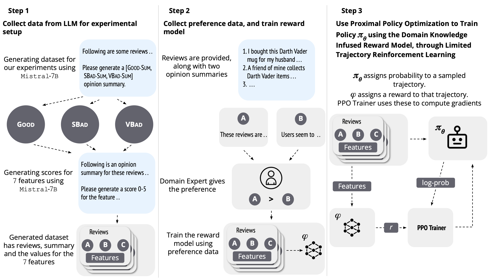

Leveraging Domain Knowledge for Efficient Reward Modelling in RLHF: A Case-Study in E-Commerce Opinion Summarization
Swaroop Nath†1, Tejpalsingh Siledar†1, Sri Raghava†1, Rupasai Rangaraju†1, Harshad Khadilkar1, Pushpak Bhattacharyya1, Suman Banerjee2, Amey Patil2, Sudhanshu Shekhar Singh2, Muthusamy Chelliah2, Nikesh Garera2
1IIT Bombay 2Flipkart
†Equal contribution
A reward model for opinion summarization that scores seven expert-defined features instead of raw text, so it can be trained with 940 human preferences.

Interactive Demo
See the feature scores the reward model works from, and compare the summaries the models actually wrote for one product.
Feature scores
Mistral-7B rates a summary from 0 to 5 on each feature, given the reviews. Load scores from the paper or drag the sliders.
φop itself is a small trained network over these scores. The right-hand column is each feature's measured influence on it: hallucination and opinion faithfulness matter most.
Compare model outputs
Summaries of the same eight Amazon reviews, with the paper's annotations.
Show the eight input reviews
Results
Pairwise preference: Inductive-Bias vs. each competitor
ROUGE-L by benchmark
Method

Abstract
Reinforcement Learning from Human Feedback (RLHF) has become a dominating strategy in aligning Language Models (LMs) with human values/goals. The key to the strategy is learning a reward model (φ), which can reflect the latent reward model of humans. While this strategy has proven effective, the training methodology requires a lot of human preference annotation (usually in the order of tens of thousands) to train φ. Such a large-scale annotation is justifiable when it's a one-time effort, and the reward model is universally applicable. However, human goals are subjective and depend on the task, requiring task-specific preference annotations, which can be impractical to fulfill. To address this challenge, we propose a novel approach to infuse domain knowledge into φ, which reduces the amount of preference annotation required (21×), omits Alignment Tax, and provides some interpretability. We validate our approach in E-Commerce Opinion Summarization, with a significant reduction in dataset size (to just 940 samples) while advancing the SOTA (~4 point Rouge-L improvement, 68% of times preferred by humans over SOTA). Our contributions include a novel Reward Modeling technique and two new datasets: PromptOpinSumm (supervised data for Opinion Summarization) and OpinPref (a gold-standard human preference dataset). The proposed methodology opens up avenues for efficient RLHF, making it more adaptable to applications with varying human values. We release the artifacts for usage under MIT License.
Citation
@misc{nath2024leveraging,
title = {Leveraging Domain Knowledge for Efficient Reward Modelling in RLHF: A Case-Study in E-Commerce Opinion Summarization},
author = {Swaroop Nath and Tejpalsingh Siledar and Sankara Sri Raghava Ravindra Muddu and Rupasai Rangaraju and Harshad Khadilkar and Pushpak Bhattacharyya and Suman Banerjee and Amey Patil and Sudhanshu Shekhar Singh and Muthusamy Chelliah and Nikesh Garera},
year = {2024},
eprint = {2402.15473},
archivePrefix = {arXiv},
primaryClass = {cs.CL},
url = {https://arxiv.org/abs/2402.15473}
}